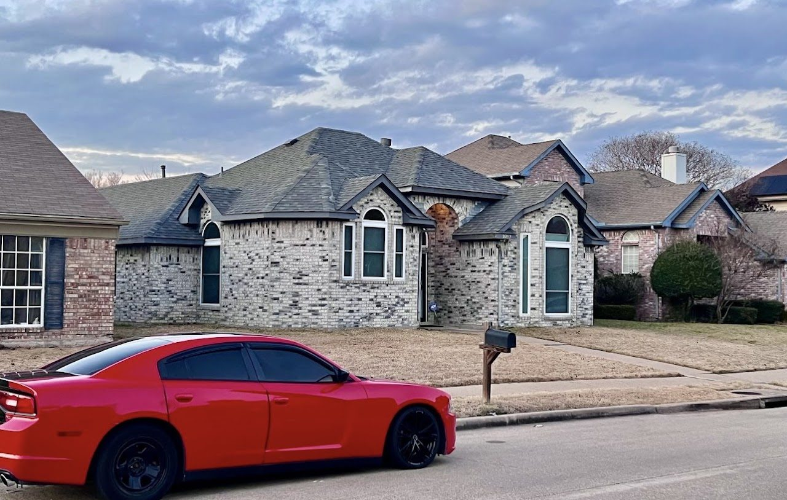

Multi-generation roofs
Older properties may carry several past replacements, and the deck condition is unknown until tear-off.
Integrity that keeps you covered.
Ellis County
Ennis sits southeast of Dallas along I-45, with a historic downtown and established residential neighborhoods.

Older housing stock near the center with newer development on the edges, plus rural acreage surrounding the city.
Ennis is roughly forty-five minutes from Dallas along the I-45 corridor, on relatively open terrain that offers little shelter from storm systems.
Ennis has a genuinely old core with a great deal of pre-war housing, surrounded by more recent development. Older properties here frequently carry roofs several generations deep over original decking, and the decking is the variable nobody can price from the ground.
The surrounding prairie leaves little to break the wind, and Ellis County takes spring hail as reliably as anywhere south of Dallas.
Timber Roofing & Exteriors serves homeowners throughout Ennis and the surrounding North Texas communities. We travel roughly two hours in any direction from Dallas for the right project. Distance and scope go hand in hand — call and we will tell you straight whether we are the right crew for your address.
What we do in Ennis
Common locally
Older properties may carry several past replacements, and the deck condition is unknown until tear-off.
Flashing and boots that predate the current shingles by decades.
Little windbreak between properties on the town's edges.
Southern approach cells reach Ennis with force intact.
How an inspection runs
The same process everywhere we work, Ennis included.
Call or send the form. Tell us what you are seeing and where you are.
A licensed inspector assesses the roof and, where accessible, the attic — documenting condition with photographs.
We show you the photos and explain what is urgent, what can wait, and what is cosmetic. In plain language.
You get a free written estimate. Nothing is ordered or scheduled until you approve the scope.
Property protected, materials delivered, and the work performed by our crew.
Magnet sweep for nails, debris hauled off, and a walkthrough with you before we leave.
Our work
Authentic project photography from Timber Roofing & Exteriors work across the Metroplex. Exact addresses are not published.
A licensed inspector, photographs you keep, and a written estimate only if work is genuinely needed.
Free inspectionNo-obligation estimateFully insuredLicensed inspectors
Questions
Yes. Call with your address and project details and we will confirm scheduling.
Yes. Inspections and written estimates are free everywhere we work, Ennis included, and they are performed by licensed inspectors. You keep the photographs whether or not you hire us.
Call and we will give you a real answer rather than a number that sounds good. Active water intrusion moves to the front of the line.
No, and we will not pretend otherwise. Timber Roofing & Exteriors serves homeowners throughout Ennis and the surrounding North Texas communities from the Metroplex. What matters is that we are local to the region, reachable next year, and not a crew that followed a storm in from out of state.
Because reusing it is common and quick. A tear-off that leaves the chimney flashing, step flashing and valley metal in place saves a day and a material line, and the shingles look perfect. Then the metal fails on its original schedule, years before the roof above it should have needed anything.
Free inspection · Free estimate
Schedule a free inspection with Timber Roofing & Exteriors and get a clear assessment of your roof, gutters, or exterior — documented with photographs you keep either way.
Free inspectionNo-obligation estimateLicensed inspectorsFully insured